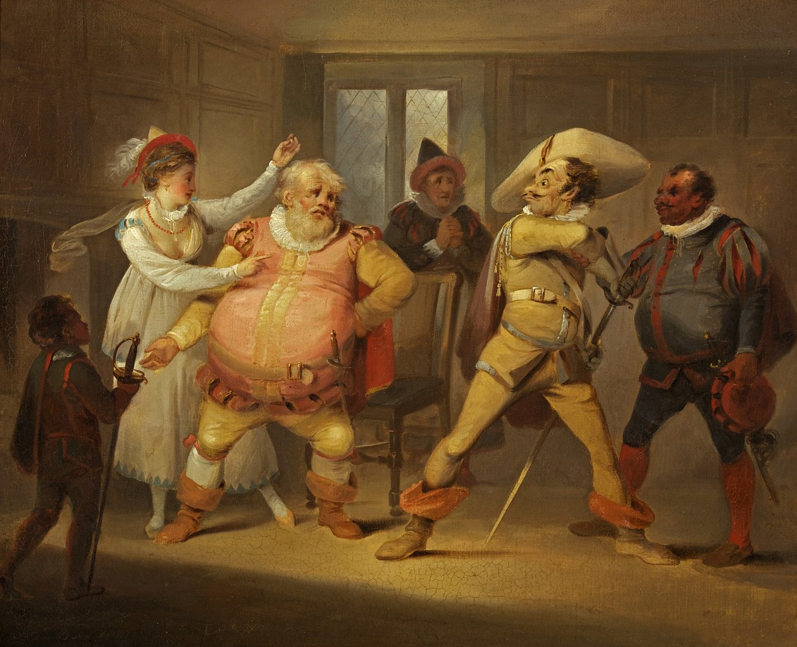
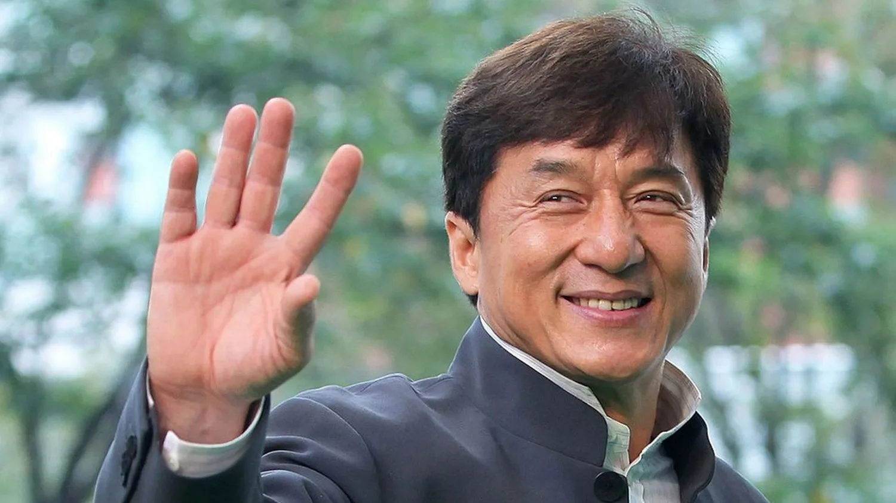
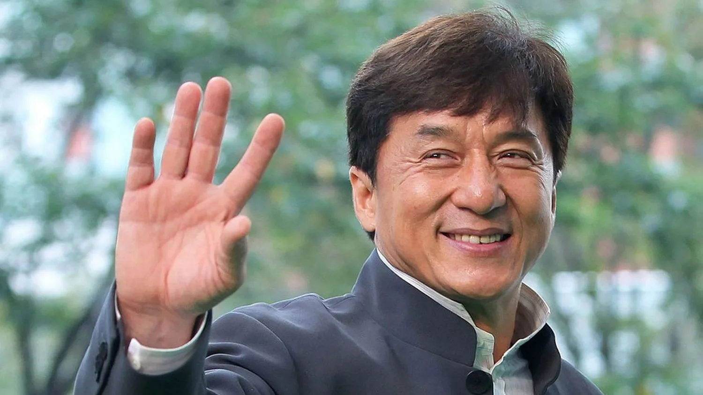

When it comes to looking back, I always do it with a certain detachment: I’m always inclined toward change, never to go back.
Thinking that only seven months separate An Erasmus Movie 2 from An Erasmus Movie fills me with a particular tenderness.
How much can a person improve in such a short time? It’s almost inhuman: human beings can adapt in surprising ways, without any real trigger, thanks to what we call creativity.
Many ask me how I manage to be both creative and cynical at the same time.
My answer is simple: dare and isolate yourself.
Allow your mind to find itself in desolate situations, where the only thing possible is to let imagination run free.
Many of the scenes were born this way, from boldness.
I never feared that someone might judge them inappropriate, because, as Verdi said in the opera
Falstaff:
Falstaff is an italian opera by Giuseppe Verdi, based on Shakespeare’s The Merry Wives of Windsor and scenes from Henry IV. Premiered in 1893, it is Verdi’s final opera and is celebrated for its comedic brilliance, lively ensemble writing, and rich characterizations.

"Tutto nel mondo è burla"
“Everything in the world is a jest.”
My sincerest advice is this: dare, imagine, isolate yourself, and keep moving forward.
Don’t fear being limited by others: creativity is the only weapon that truly makes us human.
Nowadays, this audacity is what distinguishes artificial intelligence from humans.
A task can be executed flawlessly by A.I., but it will always be monotonous, gray, lifeless.
I often found myself joking between clips: “Can A.I. ever do this?”
The answer, of course, is no.
Artificial intelligence will never reach these levels: it doesn’t dare, it doesn’t imagine, it simply copies what others have created.
Do not be afraid to draw inspiration from existing material.
Every artist starts by copying, and then develops their own style.
Hirohiko Araki
Hirohiko Araki is a Japanese manga artist, best known as the creator of the long-running series JoJo’s Bizarre Adventure. Born in 1960, he is renowned for his distinctive art style, imaginative storytelling, and inventive battle concepts, often blending supernatural powers with fashion and music references.
 was inspired by
Hokuto no Ken
also known as "Fist of the North Star (Ken il guerriero in italian)" is a Japanese manga and anime series created by Buronson and Tetsuo Hara in 1983. Set in a post-apocalyptic world, it follows Kenshiro, a martial artist who uses the deadly Hokuto Shinken technique to protect the innocent and defeat evil.
was inspired by
Hokuto no Ken
also known as "Fist of the North Star (Ken il guerriero in italian)" is a Japanese manga and anime series created by Buronson and Tetsuo Hara in 1983. Set in a post-apocalyptic world, it follows Kenshiro, a martial artist who uses the deadly Hokuto Shinken technique to protect the innocent and defeat evil.
 ,
Akira Toriyama
Akira Toriyama is a Japanese manga artist and character designer, best known as the creator of the Dragon Ball series. Born in 1955, he gained fame for his unique art style, inventive storytelling, and humor.
,
Akira Toriyama
Akira Toriyama is a Japanese manga artist and character designer, best known as the creator of the Dragon Ball series. Born in 1955, he gained fame for his unique art style, inventive storytelling, and humor.
 by
Jackie Chan.
Jackie Chan is a Hong Kong actor, martial artist, stuntman, and filmmaker, famous for his innovative blend of action, comedy, and acrobatics. Born in 1954, he has appeared in dozens of films, performing his own stunts, and is renowned for his creativity, timing, and physical comedy.

by
Jackie Chan.
Jackie Chan is a Hong Kong actor, martial artist, stuntman, and filmmaker, famous for his innovative blend of action, comedy, and acrobatics. Born in 1954, he has appeared in dozens of films, performing his own stunts, and is renowned for his creativity, timing, and physical comedy.

Here’s the secret: none of them simply copied.
Each nurtured their own creativity, and today they are considered masters of Japanese art, the same art I follow with passion.
In conclusion, revisiting a great classic is never a mistake.
These are the seeds left by a young artist that allow flourishing growth.
Sometimes, perhaps, it’s even better that way.